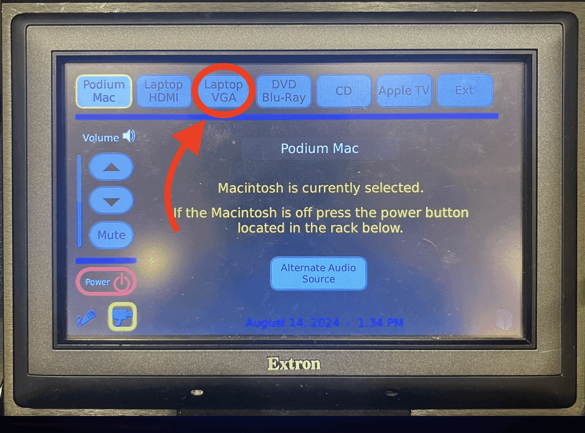

Room 303
Room PC Sound


- On the podium, there is a black panel labeled Extron. Tap "Start w/o Projector" to wake it up.
- Tap "Podium Mac" in the top right corner on the Extron panel.
- Adjust the volume with the up and down arrows on the left side of the Extron panel.
- When finished with the system, click on the "Power" button on the Extron panel and select "Power Down".
Laptop Sound


- On the podium, there is a black panel labeled Extron. Tap "Start w/o Projector" to wake it up.
- Tap "Laptop HDMI" in the top right corner on the Extron panel.
- Adjust the volume with the up and down arrows on the left side of the Extron panel.
- When finished with the system, click on the "Power" button on the Extron panel and select "Power Down".
External Sound Source

- On the podium, there is a black panel labeled Extron. Tap "Start w/o Projector" to wake it up.
- Tap "Laptop VGA" in the top right corner on the Extron panel.
- Connect your device to the aux cable attached to the podium.
- Adjust the volume with the up and down arrows on the left side of the Extron panel.
- When finished with the system, click on the "Power" button on the Extron panel and select "Power Down".
For Mac: In Control Center (top right), select "External Headphones" under Sound.
For Windows: Click the speaker icon (bottom right), select the "Headphones" device.